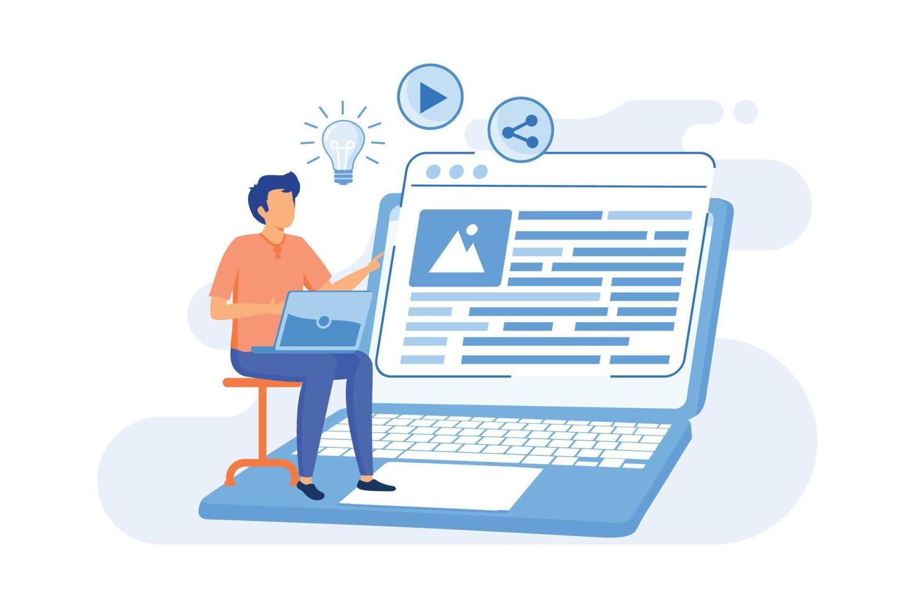

Name | 07 January | 6 min read
Name | 12 February | 5 min read

Name | 17 March | 4 min read
Name | 07 January | 6 min read
Name | 12 February | 5 min read
Name | 17 March | 4 min read
Stay in the loop with the most recent developments and updates from our blog. We strive to keep our community informed and engaged.
We're thrilled to introduce several new features that elevate your blogging experience. From enhanced editing tools to customizable templates, there's more to explore than ever before!
Each month, we feature an outstanding member of our blogging community. This month, we're proud to showcase a blogger whose unique voice and perspective inspire others!